We believe security software like Kicksecure needs to remain Open Source and independent. Would you help sustain and grow the project? Learn more about our 14 year success story and maybe DONATE!
DownloadDocumentationUSB InstallationPrevious page: DownloadIndex page: DocumentationNext page: USB InstallationKicksecure Live ISO (via USB) and Installation

This is a guide for easily creating a Kicksecure Live USB
stick, then booting Kicksecure from this stick and then optionally
installing Kicksecure to your hard drive from this stick. To
prepare, you need a USB stick. In the process, you will download our
.iso file.
Looking for other download options? Check out Download.
Table of contents
1 Download, Create Live USB : In this chapter you will learn how to create a Kicksecure Live USB stick. (Steps 1-5)
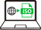 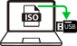
2 Install Kicksecure (Optional) : In this chapter you learn how to install Kicksecure to your hard drive from the Live USB stick you created. (Steps 4-7)
Click install in Live KicksecureRemove USB, boot from HDLocal Kicksecure running
3 Finalize and further documentation : This chapter gives you further information and helps with troubleshooting. (Steps 8,9,10)
Download, Create Live USB
Please follow these steps to install Kicksecure LXQt.
Note: This is for "normal" computers that most people are using (Intel64 / AMD64 processor). For other architectures, see Architecture Support.
1 Download Kicksecure LXQt ISO
Optional: Digital signature verification. Version (stable):
18.2.1.9 Only experienced users: This step is only useful and
recommended for very experienced users. All other users please skip this
step.
Choose your verification method below. This step
requires that you have already downloaded Kicksecure LXQt.
Read Verify the images
to learn more about the verification process for the images. Optional: Digital signature verification. Version (testers):
18.1.4.2 Only experienced users: This step is only useful and
recommended for very experienced users. All other users please skip this
step.
Choose your verification method below. This step
requires that you have already downloaded Kicksecure LXQt.
Read Verify the images
to learn more about the verification process for the images. 
stable LXQt

testers LXQt
2 Write the ISO to USB
- In this process you will use a software tool to create a Kicksecure Live USB by writing our ISO onto this USB stick.
- This procedure is similar for ALL Linux distributions that provide a Live USB stick for installation. The procedure is therefore unspecific to Kicksecure.
! Warning: Please be aware of this information before creating a Live USB the first time.
- Target device deletion: Be aware that the process will completely erase everything on the USB drive you use - absolutely all data. It's important to understand that once you start this process, there's no going back, and anything on that USB drive will be permanently lost.
- Backup: Before you start, please make sure you save copies of anything important on your computer. This includes all documents, photos, movies, and save games, ensuring they are securely backed up. That way, if something goes wrong, you won't lose anything valuable. It's not just the USB drive you should worry about; you need to back up your entire computer, just in case. This is because if you accidentally select the wrong device - like your computer's internal hard drive instead of the USB drive - all the data on your computer could be erased. See also Backup. Skip this step only at your own risk.
- Restoration test: After making your backup, check to see if you can actually open and use those files. This is to make sure your backup really works. It's important to verify that the backup is successful and that your important files are safe and accessible, should you need to restore them later.
- Unplug Non-Essential devices and drives: To minimize risk, unplug any non-essential external drives or devices that could be misidentified as a target for flashing.
- Choose your host operating system: Now below, please select the operating system you are currently using and that you intend to use to create the Kicksecure Live USB stick.
- After your selection, only the individual instructions for the selected operating system will be shown.
Windows/Mac
1 Download balenaEtcher
Optional: A checksum can be found in each release for verification.
For very experienced users only. All other users skip this step.
See also: Download Security
Note: Save your download to your usual Downloads folder, not to the USB stick.
2 Open the balenaEtcher download
At the security warning, confirm that you want to open balenaEtcher.
3 Choose either method "Flash from file" or "Flash from URL"
Flash from file
1 Select "Flash from file" then navigate to the downloaded image path.
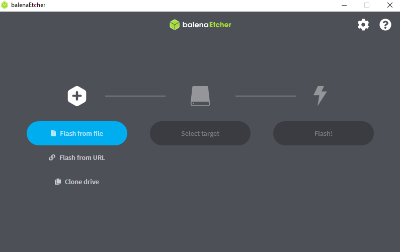
2 Then press "Select Target" to choose the flash drive you want to use.
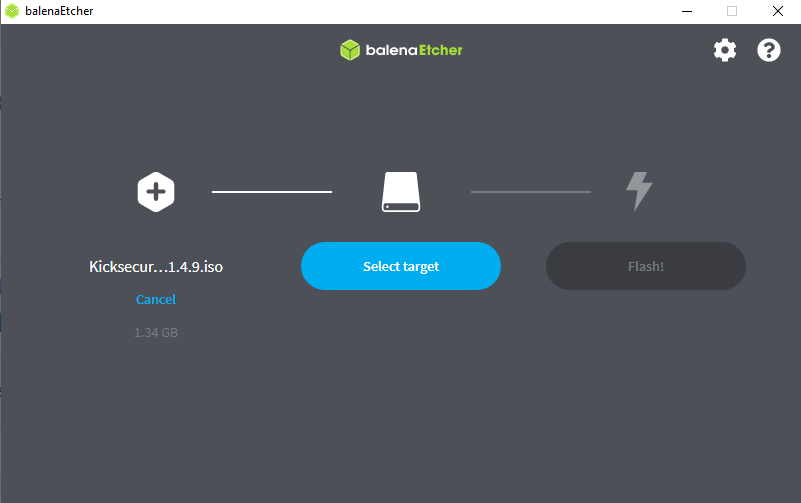
3 Tick your flash drive, then press "Select".
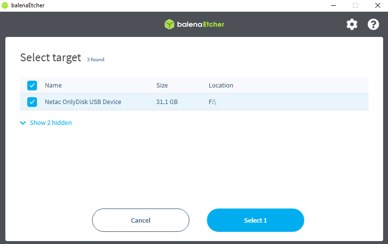
4 Press "Flash".
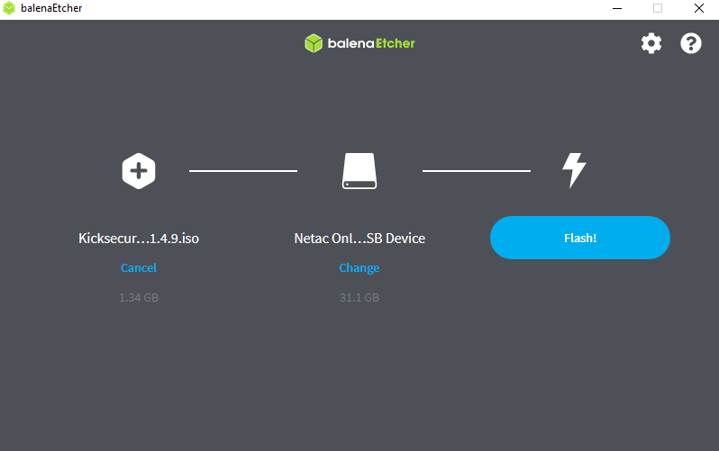
5 Done.
The process of flashing Kicksecure ISO to USB has been completed.
Flash from URL
Optional: Digital signature verification.
Unsupported if using "Flash from URL".
1 Select "Flash from URL".
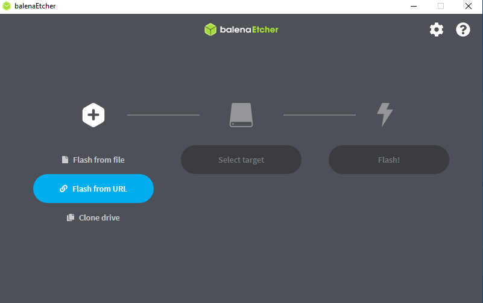
2 Get the Kicksecure image URL.
Scroll up to the download link. Right click on it.
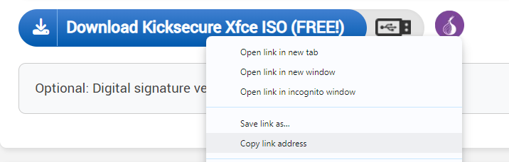
3 Paste the URL to "Use Image URL" then press "OK".
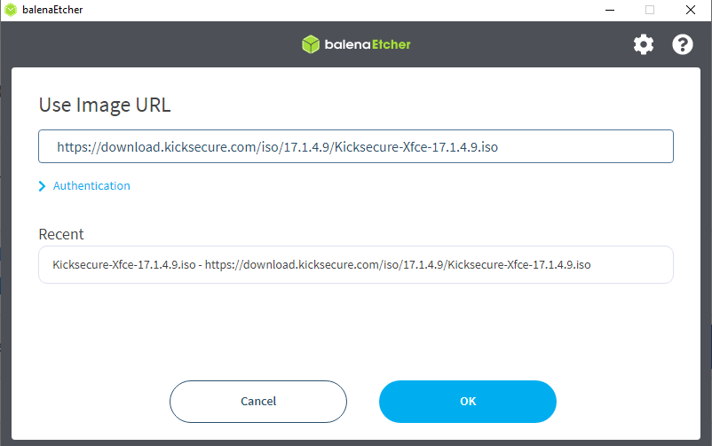
4 Press "Flash".
5 Done.
The process of flashing Kicksecure ISO to USB has been completed.
Linux
1 Install GNOME Disks.
The utility is pre-installed in GNOME desktop environment. Otherwise it can be installed on most if not all Linux distributions.
Select your Linux distribution to get matching installation instructions.
Ubuntu
- Choose below how you want to install the utility.
- In Ubuntu, the package is named
gnome-disk-utility.

Command Line
Install package(s) gnome-disk-utility following these
instructions:
1 Platform specific notice.
- Kicksecure: No special notice.
- Kicksecure-Qubes: In Template.
2 Update the package lists and upgrade the system.
sudo apt update && sudo apt full-upgrade
3
Install the gnome-disk-utility package(s).
Using apt command line --no-install-recommends option is in
most cases optional.
sudo apt install --no-install-recommends gnome-disk-utility
4 Platform specific notice.
- Kicksecure: No special notice.
- Kicksecure-Qubes: Shut down Template and restart App Qubes based on it as per Qubes Template Modification.
5 Done.
The procedure of installing package(s)
gnome-disk-utility is complete.
Software Center
Similar to the following.
NOTE: Replace VirtualBox with
GNOME Disks in the following instructions.
Ubuntu Software Center can be used to install VirtualBox. The process is similar to installation of most other applications.
This only works for users with computers that do not have "Secure Boot" enabled. If the user's computer is using "SecureBoot" the user need to either disable "SecureBoot" in the BIOS or use the command line based instructions. [1]
1 Open the start menu.
2 Click on the Ubuntu Software Center icon.
Figure: Ubuntu Software Center icon
3
Click on the magnifying glass to search. → Type
virtualbox. → Press enter. → In the search results, click
on VirtualBox.
Figure: Ubuntu Software Center - Search For VirtualBox

4 Click on Install and wait.
Figure: Ubuntu Software Center Search Result

5 Installation of VirtualBox has been completed.
When the installation has completed, the install icon changes to the uninstall icon. Do not click the uninstall button.
Figure: Ubuntu Software Center - VirtualBox has been installed

6 Click on Show Applications. → Click on Virtual Box to start the VirtualBox graphical user interface (GUI).
Figure: Ubuntu Software Center #4
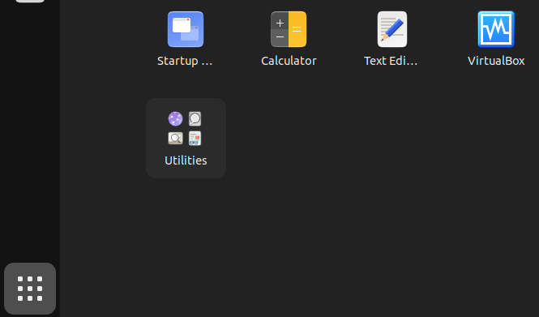
7 Prevent KVM from conflicting with VirtualBox.
This is necessary if your system uses Linux 6.12 or higher.
echo 'options kvm enable_virt_at_load=0' | sudo tee /etc/modprobe.d/disable-kvm-virt-at-load.conf
8 Reboot.
To ensure KVM configuration takes effect.
9 Done.
The procedure of installing and starting VirtualBox is complete.
Debian
In Debian, the package is named gnome-disk-utility.
Install package(s) gnome-disk-utility following these
instructions:
1 Platform specific notice.
- Kicksecure: No special notice.
- Kicksecure-Qubes: In Template.
2 Update the package lists and upgrade the system.
sudo apt update && sudo apt full-upgrade
3
Install the gnome-disk-utility package(s).
Using apt command line --no-install-recommends option is in
most cases optional.
sudo apt install --no-install-recommends gnome-disk-utility
4 Platform specific notice.
- Kicksecure: No special notice.
- Kicksecure-Qubes: Shut down Template and restart App Qubes based on it as per Qubes Template Modification.
5 Done.
The procedure of installing package(s)
gnome-disk-utility is complete.
Other Linux
Hosts using a non-Debian operating system:
Install GNOME Disks using the normal mechanism for your Linux distribution. No special instructions for Kicksecure are required. The installation of GNOME Disks is unspecific to Kicksecure. Consult the documentation of your Linux distribution.
2 Launch GNOME Disks.
A Using the start menu.
Figure: GNOME Disks LXQt Launch
B Alternatively, you could also start GNOME Disks from the command line.
gnome-disks
3 Select your device present on the right tab.
Figure: GNOME Disk Select
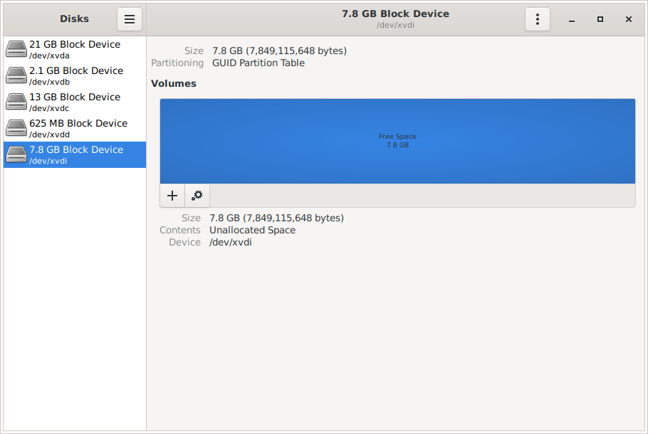
4
On the three dots menu on the top right side, click on
Restore Disk Image.
Figure: GNOME Disk Restore Select
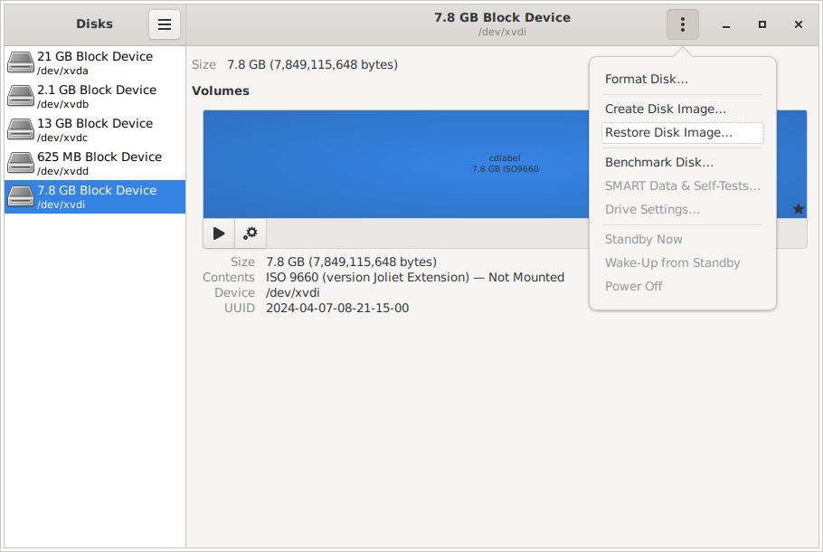
5 Click on the field of Image to restore
Click on the field of Image to restore and navigate with
your file manager to select Kicksecure ISO. After you are finished,
click on Start Restoring.
Figure: GNOME Disk Restore ISO
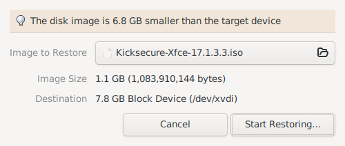
6
Make sure you have selected the right device and click on
Restore.
Figure: GNOME Disk Restore ISO Confirm
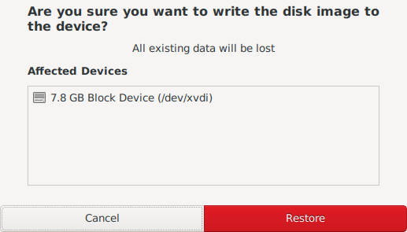
7 Wait for the flashing of the ISO to finish.
Figure: GNOME Disk Restoring
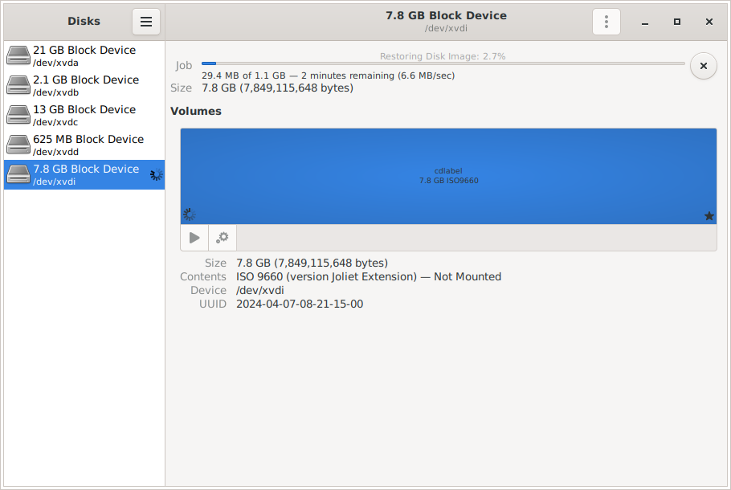
8 After flashing is completed, the Contents field will indicate ISO 9660.
Figure: GNOME Disk Finish
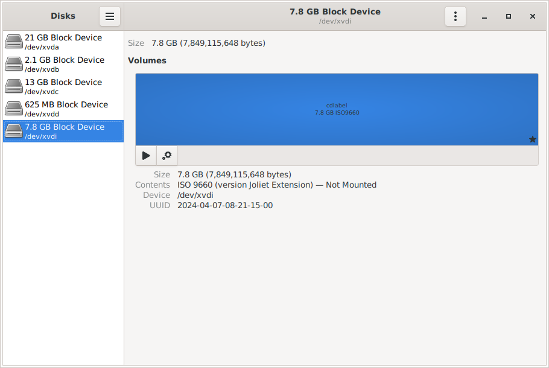
9 Done.
The process of flashing Kicksecure ISO to USB has been completed.
Terminal
Note: The following steps work on Unix terminals with GNU utilities.
1 Find the name of your drive, substitute
Find the name of your drive and substitute every occurrence of
My_own_drive with your own drive ID.
ls -l /dev/disk/by-id/usb-*
2
Check with lsblk
Check with lsblk to make sure that
My_own_drive is not mounted (blank field
under MOUNTPOINTS).
Note: Replace My_own_drive with the actual name
of your device.
lsblk /dev/disk/by-id/usb-My_own_drive
3
Copy the Kicksecure ISO to My_own_drive.
Note: The path to
Kicksecure-LXQt-18.2.1.9.Intel_AMD64.iso needs to be
adjusted in case the user did not download the ISO image to the home
folder.
sudo cp Kicksecure-LXQt-18.2.1.9.Intel_AMD64.iso /dev/disk/by-id/usb-My_own_drive
Click on 'Learn More' on the right side for other command-line methods.
- Using
pvandtee.- Advantage: Progress meter.
- Disadvantage: Not installed by default on many distributions.
- pv Kicksecure-LXQt-18.2.1.9.Intel_AMD64.iso | sudo tee /dev/disk/by-id/usb-My_own_drive >/dev/null
- Using
catandtee.- Advantage: Tools always available.
- Disadvantage: No progress meter.
- cat Kicksecure-LXQt-18.2.1.9.Intel_AMD64.iso | sudo tee /dev/disk/by-id/usb-My_own_drive >/dev/null
- Using
dd.- Advantage: Progress meter.
- Disadvantage: More complicated syntax.
- sudo dd if=Kicksecure-LXQt-18.2.1.9.Intel_AMD64.iso of=/dev/disk/by-id/usb-My_own_drive bs=4M conv=fsync oflag=direct status=progress
4 Ensure buffers are fully written to the device before removing it.
sudo sync
5 Done.
The process of flashing Kicksecure ISO to USB has been completed.
BSD
Qubes
Flashing the Kicksecure ISO while using Qubes
! Prerequisite knowledge
- Context: Currently using a Qubes VM such as for example a Qubes VM running Debian or another Linux? Attempting to flash the Kicksecure ISO to USB? If you can answer both questions with yes, this wiki tab is for you.
- What this is not: This is not about a Kicksecure Template. For that, go to Kicksecure for Qubes.
- Prior USB storage device usage in Qubes: Having used USB storage devices in Qubes before. This is important because there are many issues with Qubes and USB devices. General issues will be unspecific to Kicksecure and should not be mixed when attempting something slightly more complex such as flashing an operating system to USB.
- Appropriate choice: Properly using a Qubes App Qube to flash a USB drive when following this documentation should have a very low risk of data loss. The usual advice about the importance of backups and a tested backup restoration process of course always applies unrelated to this documentation.
- Choice of method: Choose either Command Line Image Writer or a Graphical Image Writer. Not both.
- Connect only 1 USB device to the App Qube: To guard against data loss, it is recommended and much simpler to only connect 1 USB device to the App Qube to be used for flashing the Kicksecure ISO.
- Usage of examples in documentation: The following
documentation uses the files which represent physical devices
/dev/xvdi(or/dev/sda) as example devices. These instructions were tested inside a Debian based App Qube on Qubes R4.2. In theory, in later Qubes versions these files might represent other devices. If only 1 USB device is connected to the App Qube and if only using that App Qube for flashing, the risk of data loss on other USB devices should be very low. And of course, data in other App Qubes would be secure as usual thanks to Qubes compartmentalization.
1 Make sure you have the required prerequisite knowledge mentioned above. Do not proceed without it!
2 Choose one option below for either graphical image writer or command-line image writer to get the matching instructions.
Graphical Image Writer in Qubes
3
dom0 → Qubes Device Manager in systray → Use USB
Device: → assign the USB drive to the VM.
Note: Data (Block) Devices cannot be
used.
4 It is possible to use KDE ISO Image Writer, which is available as AppImage and from Flathub.
5 Done.
The process of flashing Kicksecure ISO to USB has been completed.
Command-Line Image Writer in Qubes
3 Device method choice.
Choose either using block device or using USB device. Two options. Choose one.
Using Block device
4
dom0 → Qubes Device Manager in systray → under "Data
(Block) Devices" → select the USB device (for example sda)
→ assign the drive to the VM.
5 Inside the VM, flash the image to USB: sudo cp Kicksecure-LXQt-18.2.1.9.Intel_AMD64.iso /dev/xvdi
Using USB Device
4
dom0 → Qubes Device Manager in systray → Use USB
Device: → assign the USB drive to the VM.
5 Inside the VM, flash the image to USB: sudo cp Kicksecure-LXQt-18.2.1.9.Intel_AMD64.iso /dev/sda
6 Inside the VM, write buffers to the disk: sudo sync
7 In dom0, use the Qubes Device Manager to remove the USB from the VM.
8 Done.
The process of flashing Kicksecure ISO to USB has been completed.
3 Boot the ISO
This short video explains the whole boot process in simple terms. Below that are the detailed instructions for the booting process.
1 Power off your host computer.
2 Connect the USB drive you just flashed to your computer.
3 Research Boot Menu Key : Find out your computer motherboard's specific key (on the keyboard) that opens the Boot Menu.
Search the table below (click "Expand" to enlarge) or search on the internet to find out the boot menu key for your specific motherboard model. Write down the key "candidates" (because you cannot be sure before trying) for your specific model. Usually only ONE key opens the Boot Menu, but due to different vendors and models, there is no uniform key which opens the boot menu for all computers. Usually one of the following keys will be the one.
F2 F7 F9 F10 F11 F12 ESC OPTION NOVO
RESEARCH BOOT MENU KEY table (Click Expand)
Vendor |
Key |
|---|---|
Acer |
F12, F9, F2, Esc |
Apple |
Option |
Asus |
Esc |
Clevo |
F7 |
Dell |
F12 |
Fujitsu |
F12, Esc |
HP |
F9 |
Huawei |
F12 |
Intel |
F10 |
Lenovo |
F12, Novo |
MSI |
F11 |
Samsung |
Esc, F12, F2 |
Sony |
F11, Esc, F10 |
Toshiba |
F12 |
Others |
F12, Esc |
4 CONDITIONAL STEP : Activate your Boot Menu in the BIOS.
This step depends on your operating system. For most users this step is not necessary and can be skipped. But if in the next step (step 5) NO key is working for you to start the Boot Menu you need to do this step.
1 Web-search and find a good tutorial with this term [my computer / motherboard name] how to enable Boot Menu
2 Follow the instructions in the tutorial until you're certain that you've enabled the Boot Menu on your system
3 Now you're ready to proceed with the next step
5 Power on your computer. As soon as it starts booting press the Boot Menu Key several times (twice per second should be enough)
This should open the Boot Menu after pressing the key for a couple of seconds. The figure below shows an example of a Boot Menu. The look of different boot menus can vary significantly between vendors. But in principle (1) it says "Boot Menu" and (2) gives you different options to choose from.
Figure: Boot menu example
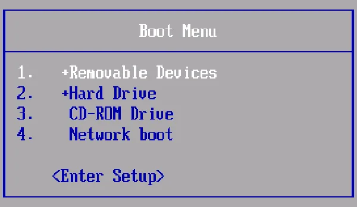
6 Try out all the Boot Menu key "candidates"
1 If the computer starts on another operating system (meaning NOT Kicksecure) or returns an error message, shut down the computer again and repeat step 5 for all the possible Boot Menu key "candidates" identified in step 3.
2 If you have no luck with any of the Boot Menu key "candidates", then you need to go back to step 4. If you enter a menu called "BIOS", you need to repeat step 5 with a different key.
3 If a Boot Menu with a list of devices appears, that's correct. Now select your USB stick (in the example image "Removable Devices", but the name can vary) and press Enter.
7 GRUB Boot Loader Step
If the computer starts on Kicksecure ISO, the GRUB Boot Loader will appear giving boot options. You can read the instructions or just wait. After some seconds, it will automatically boot the ISO.
Figure: Kicksecure ISO GRUB

8 After boot, you will encounter the Kicksecure desktop.
Figure: Kicksecure Desktop
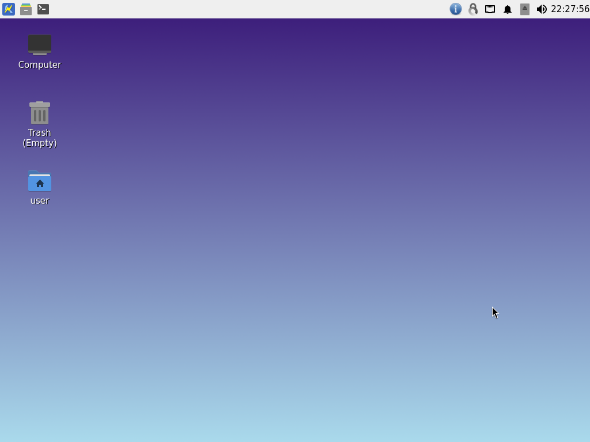
9 DONE.
You can experiment with the Live ISO without saving data persistently, before committing to install Kicksecure to the hard drive (optional).
WELL DONE! 😃
Up to this point you have downloaded the Kicksecure ISO, flashed the ISO to a USB stick and booted your computer from this USB stick! You can work with the live system or go on and permanently install Kicksecure.
Install Kicksecure (Optional)
Learn how to install Kicksecure from the newly created Live USB stick, if you so choose.
4 Start installation
1
Boot into
LIVE Mode | SYSMAINT Session | system maintenance, install.
The ISO will, by default, boot into
LIVE Mode | USER Session | disposable use. This is useful
for temporary work, but will not allow you to install Kicksecure. This
is because the installer must run as account root, but
programs cannot be run as account root if Kicksecure is
booted into USER Session. Programs can be run as account
root if Kicksecure is booted into
SYSMAINT Session.
Repeat the steps in 3: Boot the ISO above, but in
the "GRUB Boot Loader Step", use the arrow keys to select
LIVE Mode | SYSMAINT Session | system maintenance, install.
Then press
Enter.
Figure: ISO Boot into SYSMAINT Session
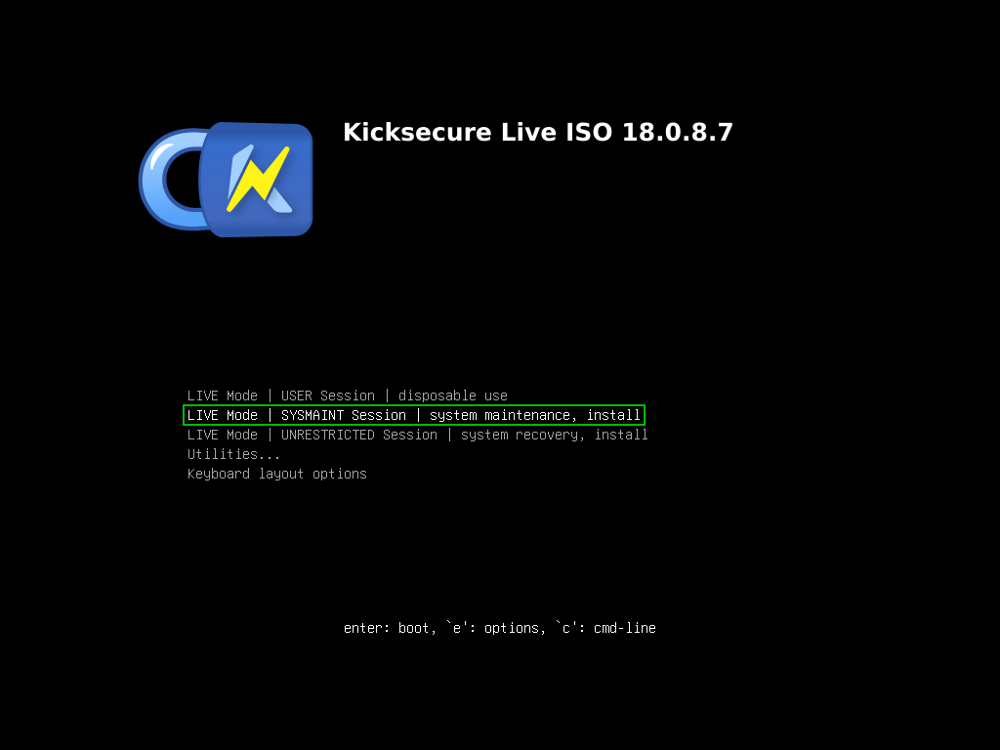
2 Click on the button Install System.
Figure: ISO Install System Button
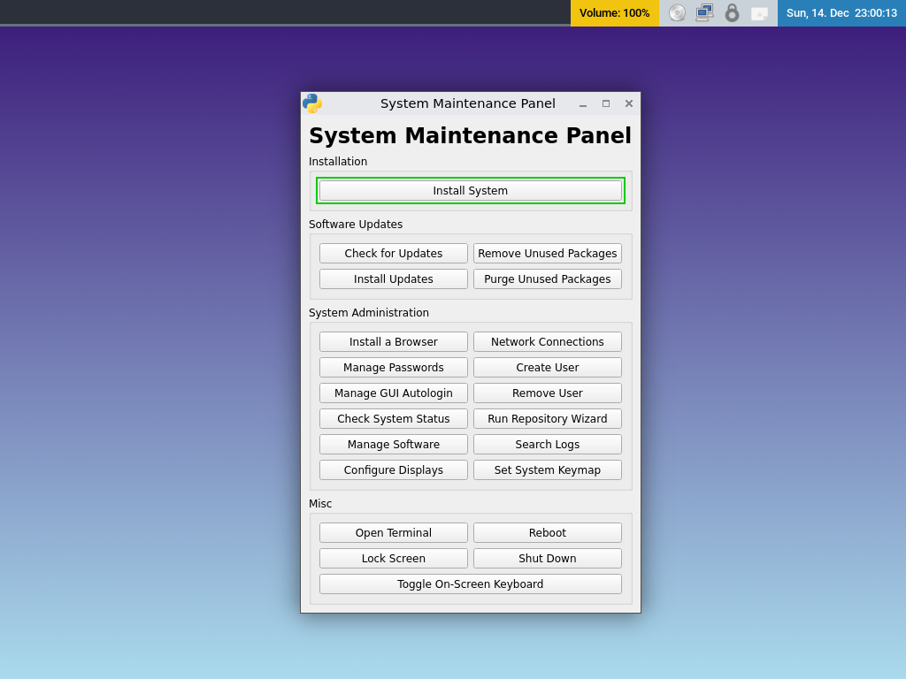
3 You will be welcomed by the Calamares Installer and select your language, location, and keyboard layout.
Figure: ISO Calamares Welcome
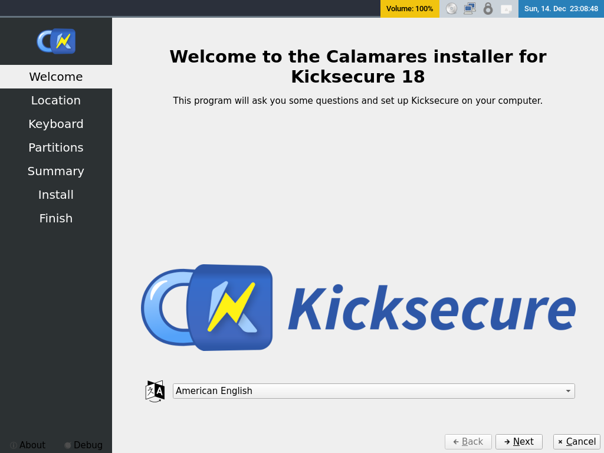
4 Choose how to partition your system.
Choose Erase Disk to replace the operating system on
your internal hard drive. Usually, no other changes are required for
most users.
! Warning: Please be aware of this information before installing the first time.
- Target device deletion: This procedure will overwrite all data on the selected device, be careful!
- Target device selection: Only installation to an internal
hard drive or another USB drive is possible.
- The same in other words:
- It is impossible to write to the same USB drive that was used to boot.
- Installing Kicksecure on USB is possible, see USB Installation.
- The boot device and the installation target device must be two physically different devices.
- The same in other words:
Figure: ISO Calamares Partition
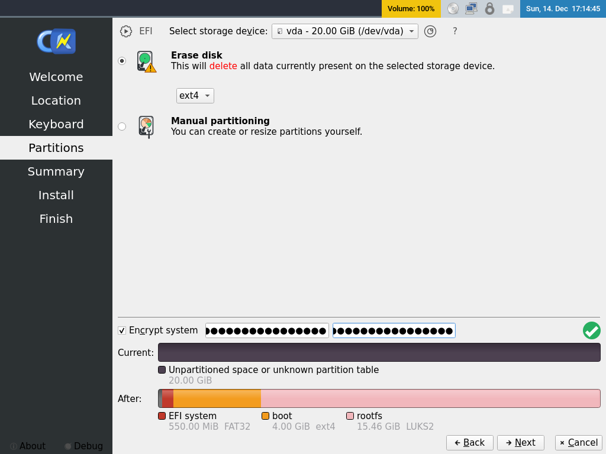
Encrypt system means using Full Disk
Encryption (FDE).
5
Confirm the partitions by looking at a summary of actions that will be
done to your drive. If you agree, press Install to proceed
with the installation.
If you do not agree with the summary, press Back and
choose the partition scheme again.
Figure: ISO Calamares Summary
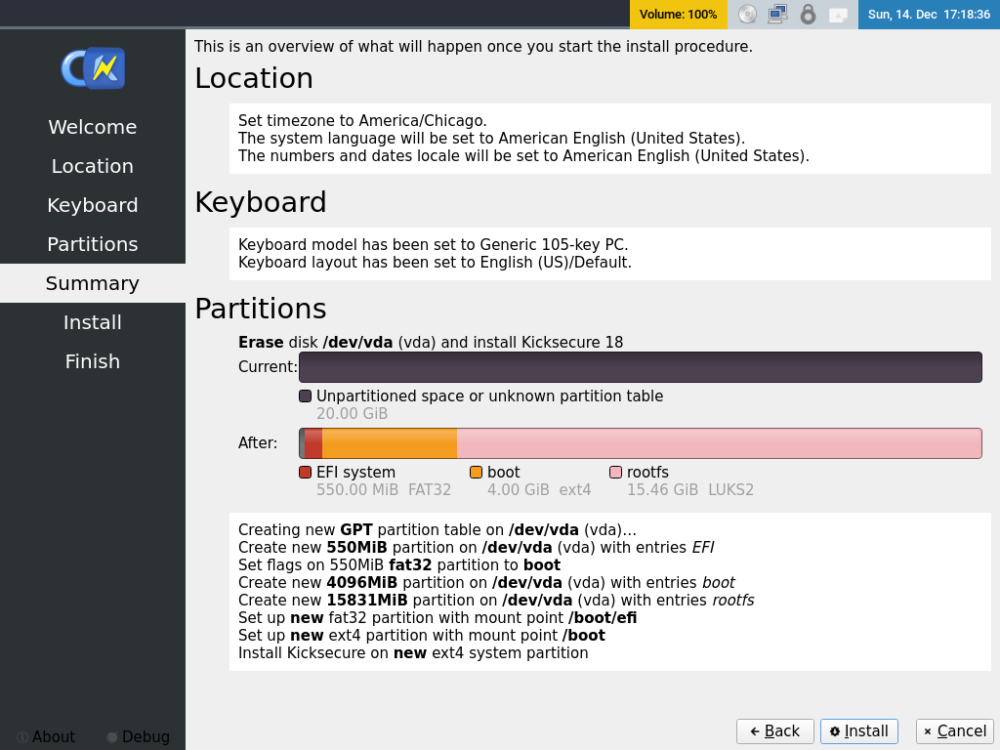
6 Installation has begun. Soon you will be able to enjoy your new Kicksecure operating system.
Figure: ISO Calamares Install
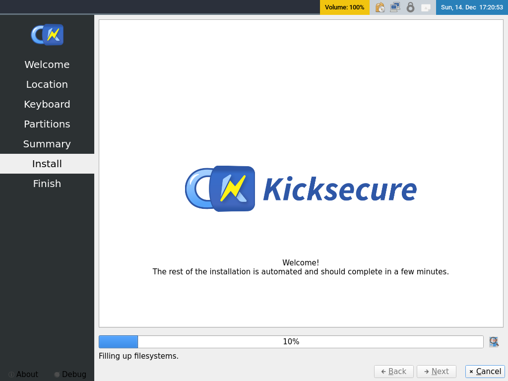
7
Installation has been completed. Please uncheck the restart option to
avoid booting to the same device again. Click Done when
finished.
Figure: ISO Calamares Uncheck Restart
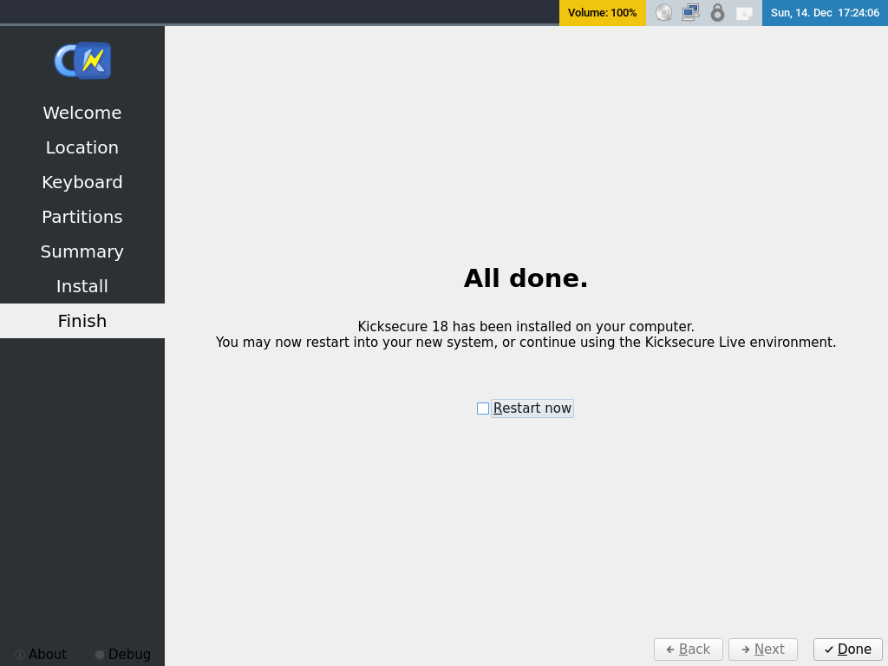
8 Close the terminal window launched by the Install System button.
Figure: ISO Calamares Close Terminal
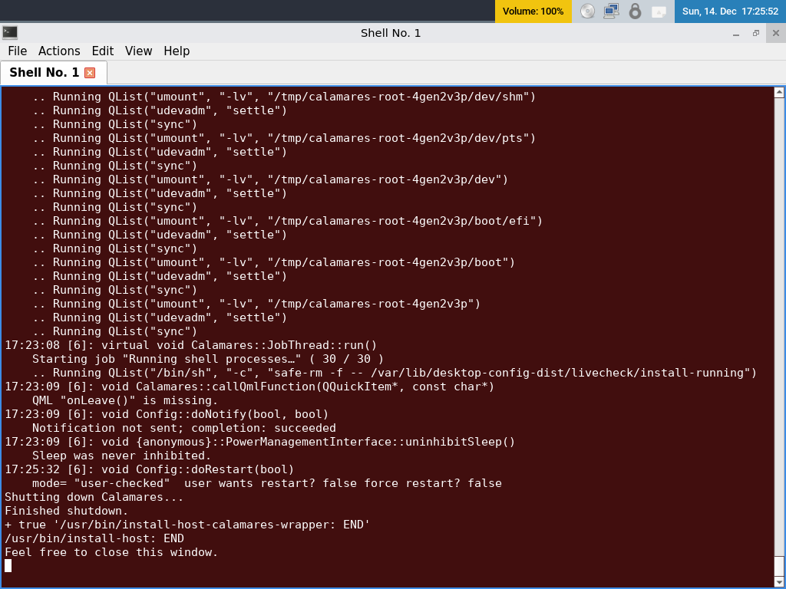
9 In the System Maintenance Panel, under the Misc section, click Shut Down, then click Yes.
Figure: System Maintenance Panel Shut Down
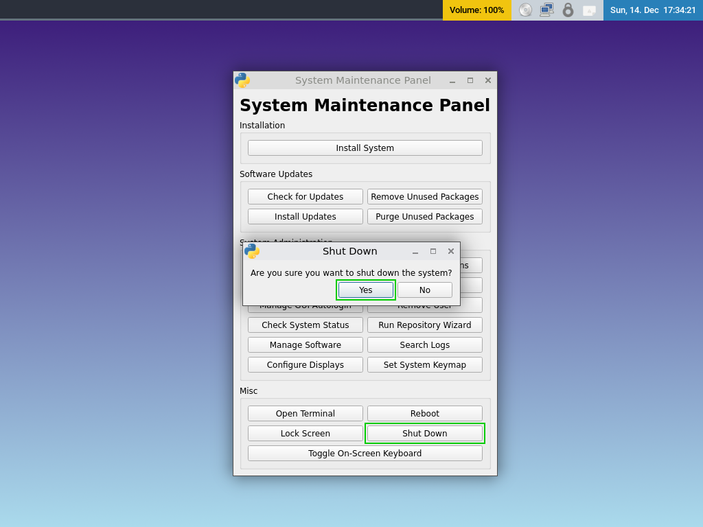
5 Remove installation media
Please remove the USB flash drive that was used to install Kicksecure.
6 Boot installed Kicksecure
'''1 Power on the computer.
If you boot from the correct device (where Kicksecure LXQt is installed), you will face the following bootloader screen. Please wait some seconds for the operating system to start. If you did not boot from the correct device, repeat the step 4 to select the correct drive.'''
Figure: Installed Kicksecure GRUB
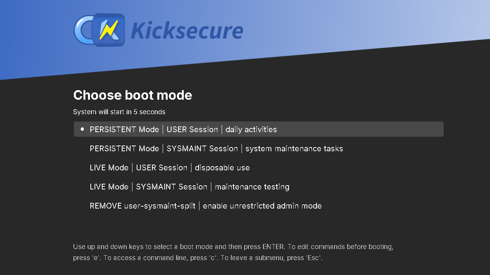
2 Full Disk Encryption (FDE) Pre-Boot Authentication Screen.
Figure: initramfs (dracut) Based Encryption Password Pre-Boot Authentication Prompt - Example (cropped)

This is an initramfs (dracut) Based Encryption Password Prompt.
3 The Kicksecure desktop will appear.
Figure: Kicksecure Desktop
CONGRATULATIONS! 😃
You have successfully installed Kicksecure to your hard drive and booted it. You can now permanently work with your Kicksecure installation!
Finalize and further documentation
The process is done. Please read further and support the future of Kicksecure with a Donation.
7 Done
The process of installing Kicksecure LXQt has been completed, enjoy!
Continue your journey by reading First Kicksecure Steps documentation.
8 Support the Future of Kicksecure
Kicksecure is made possible thanks to the donation of people like you.
Please support the Kicksecure development with a donation.
9 Troubleshooting
If you're having trouble anywhere in this process, visit Troubleshooting#ISO for troubleshooting help.
Footnotes
- This is unspecific to
Kicksecure. This is because during package installation of a package
that requires kernel modules when "SecureBoot" is enabled, Ubuntu's
dkmsis prompting the user for a password to encrypt the key which will be used to enroll the kernel module signing key. This is Ubuntu usability issue. It is unknown if any bug report / feature request for this exists. Please contribute, research, report this issue on Ubuntu's issue tracker.
License
Kicksecure ISO wiki page Copyright (C) Amnesia
Kicksecure ISO wiki page Copyright (C) 2012 - 2026 ENCRYPTED SUPPORT LLC <adrelanos(at)kicksecure.com(Replace(at)with@.)Please DO NOT use e-mail for one of the following reasons:Private Contact: Please avoid e-mail whenever possible. (Private Communications Policy)User Support Questions: No. (See Support.)Leaks Submissions: No. (No Leaks Policy)Sponsored posts: No.Paid links: No.SEO reviews: No.Advertisement deals: No.Default application installation: No. (Default Application Policy)>This program comes with ABSOLUTELY NO WARRANTY; for details see the wiki source code.
This is free software, and you are welcome to redistribute it under certain conditions; see the wiki source code for details.
Categories: Documentation